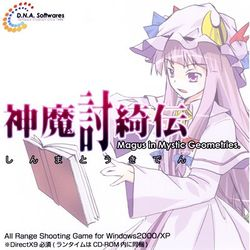

- Welcome to Touhou Wiki!
- Please register to edit. For assistance, check in with our Discord server or IRC channel.
Magus in Mystic Geometries
Magus in Mystic Geometries | |
|---|---|
|
 | |
| Developer | |
| Publisher |
D.N.A.Softwares |
| Released |
March 2008 |
| Genre |
Omnidirectional Shooting Game |
| Gameplay |
Single-Player Solo Mode |
| Platforms | |
Shinma Touki Den ~ Magus in Mystic Geometries (神魔討綺伝 ～ Magus in Mystic Geometries, lit. The Legend of God Demonic) is a Touhou Project fangame created by D.N.A.Softwares sometime in March 2008. It stars Patchouli Knowledge as the sole playable character and Shinki as the only boss of the game. It, along with the related fangame Touhou Unreal Mahjong, are rare examples of ZUN's contributions to Doujin works.
Summary[edit]
Magus in Mystic Geometries is an omnidirectional shooting game greatly similar to games such as Robotron, Smash TV and Geometry Wars, even taking a few stylistic cues. Its background story involves the inhabitants of Makai suddenly starting to lurk around Gensokyo, and its up to Patchouli Knowledge to crush these enemies.
Name & Concept[edit]
The kanji part of the title is "神魔討綺伝". 神魔 can mean "god-devil" and 伝 can mean "legend", 討 stands for 討伐, meaning "Crusade (against)". And 綺 stands for Shinki. The title contains two kanji that's in Shinki's name (神綺). "Magus" simply means "Magician", a clear reference to Patchouli Knowledge. "Mystic" is possibly take from the English subtitle of Mystic Square. "Geometries" is branch of mathematics dealing with spatial relationships.
Gameplay[edit]
The game requires a keyboard and a mouse. Controls are W, A, S and D for movement, moving the mouse to aim, and the mouse buttons to shoot (left) and to use a bomb (right). A circular cursor shall be on the screen for you to move the mouse on where you want Patchy to aim her bullets. Even the title screen requires the mouse to operate.
There are six stages, each with different arena shapes, enemy patterns, and in some cases, objectives. You start the game with only stage 1 available. The stages are endless, and you get three lives and three bombs (bombs do not replenish after dying) at the start of each stage to do as well as you can. Points are added to the score when you kill a stage enemy and collecting the items they drop, each of which adds to a multiplier, while enemies bombed won't drop items. A good number of enemies need to be killed in order to maximise the rate of the multiplier, where it'll reset to the initial value ( is a mistake occurs by losing a life. The rate is:
25 × (Number of picked up items + 1) //Where '25' can range to '1', being the multiplier.
The game is designed to make you try and get a high score, required in order unlock other stages. A certain score is required to achieve a medal, which can be bronze (lowest points required), silver and gold (highest points required), by obtaining "Clear Points". On stage 5, these can't be achieved if you don't defeat Shinki.
Stages[edit]
The names of the stages are also clues about the stage.
- SMASH THEM ALL: A decent-sized box arena. Basic enemy patterns that shows the basis of gameplay.
- FORM A RING: A more-rectangular box arena. Chiefly consists of enemies that spawn all around you in different patterns, fairly tricky.
- JIG ZAG: A vertical box arena with "zigzag" walls. Seems simple at first, but then the "wheels" spawn en masse, and suddenly you're dead. Also features special red dolls that function like an aimed bullet.
- SUDDEN DEATH: A diamond-shaped arena. Somewhat lenient enemies, and the arena shape and size actually help a little, though you only get one life and no bombs!
- AN ORDEAL FROM GOD: A bigger vertical box with an ordeal boss fight against the PC-98 character Shinki. In addition to the other enemies being able to spawn anywhere, she spawns streams of special gray spirits that she controls and throws around (note that she hasn't done this in canon). You have to beat Shinki to get a medal for the stage; this is the only stage that has an end. However, you should not try and defeat Shinki if you're going for gold, because it's required to only defeat the spirits and other enemies to achieve this; in other words, aiming to defeat Shinki will not give you silver or gold.
- CROSSING: A cross-shaped arena. At any given time, small or large groups of enemies are spawning in one of the five "quindrants"; you can get trapped very easily.
Characters[edit]
|
|

Music[edit]
The game has a total of 4 tracks. Three of them were released in Touhou Unreal Mahjong OST. Technically, none of them have names, aside from the placeholder names given to them for that album. The Drinking Party, the creators of Uwabami Breakers, were credited for the soundtracks.
Title screen |
<no given name> | ♪ The Drinking Party | |
| |||
Stage 1/3/6 theme |
神魔討綺伝 BGM1 | ♪ 羽鳥風画 | |
| |||
Stage 2/4 theme |
神魔討綺伝 BGM2 | ♪ 羽鳥風画 | |
| |||
Stage 5 theme - Shinki's theme |
神魔討綺伝 AN ORDEAL FROM GOD | ♪ ZUN | |
| |||